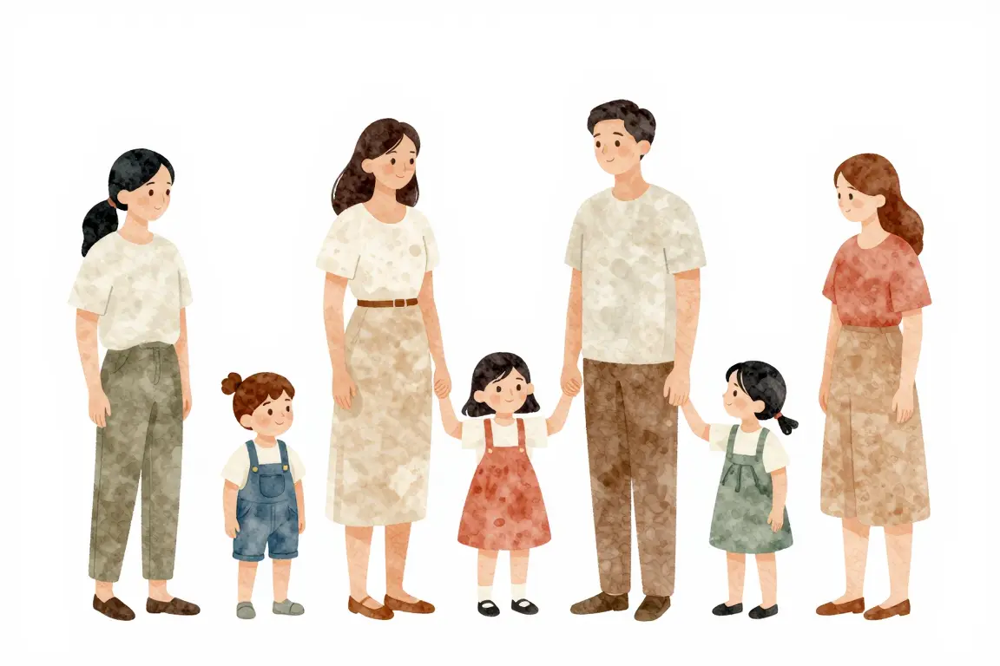
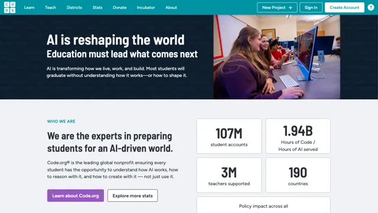
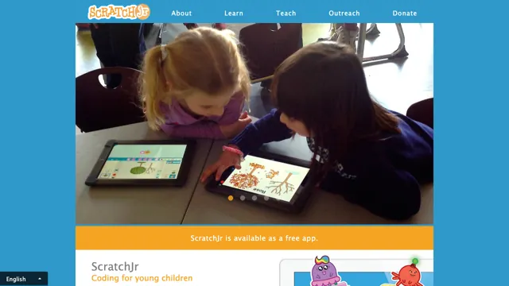
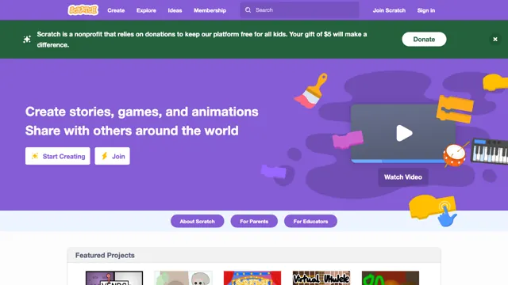

Rodičovství a kariéra v IT#
Jak se dá s programováním kombinovat mateřská nebo rodičovská? Je těžké najít v IT práci na částečný pracovní úvazek? Jak prezentovat péči o děti v životopisu? A mohou programovat i děti?

Programování pro děti#
Proč učit děti programovat? Jak začít? Kdy začít? Přečti si článek Luboše Račanského, který to celé krásně vysvětluje.
Z dítěte se základy programování může být jednou šikovný soustružník, který si na pomoc vezme CNC stroj. Nebo umělec – jako sochař Michal Trpák, který vytváří 3D tisk z betonu. Nebo zemědělec, který bude chtít použít co nejméně hnojiv a co nejlépe zacílit zavlažování. Případně politik, který se v době pandemie bude muset rozhodovat na základě obrovské sady dat.
Pokud tě láká to zkusit a trénovat s dětmi informatické myšlení, následující odkazy tě nasměrují na stránky, které jsou vhodnější než junior.guru. I když je v názvu tohoto webu slovo junior, není pro děti. Slovem junior se označují začátečníci na pracovním trhu a tento web ukazuje cestu k programování a kariéře v IT dospělým, případně dospívajícím lidem.
Kde začít#
Programování pro děti se odehrává v barevném prostředí, kde jde s dětmi vytvářet zábavné příběhy, hry, animace. Rozhodně by nemělo spočívat v psaní písmenek na černou obrazovku nebo v práci s Wordem.

Code.org
Programování, které zvládne každý rodič, kroužek, družina.

ScratchJr
V mobilu nebo na tabletu, pro nejmenší děti.

Scratch
Vytvoř hru nebo příběh a sdílej je s kamarády.
Pro nadšence#
Zkusili jste s dětmi programování a fakt hodně vás to baví? Možná by z tebe mohl být nadšenec! Tady máš pár odkazů, které by tě mohly inspirovat.
Iva a Martin Javorkovi o svých začátcích s kroužkem programování.
Články o tom, jak Luboš Račanský rozjel a provozuje kroužek programování.
Mirek Suchý sesbíral do jednoho dokumentu vše, co šlo.
Máš otázky? Chceš probrat svou situaci?
Na junior.guru Discordu si pomáhá 244 lidí, které zajímá svět IT juniorů. Začátečníci, kteří hledají komunitu a podporu. Senioři s chutí sdílet své zkušenosti. K tomu pravidelné online akce a mnoho dalšího.
Konkrétně v kanálech #codemums a #IT Mámy se v poslední době napsalo 4.439 písmenek měsíčně.